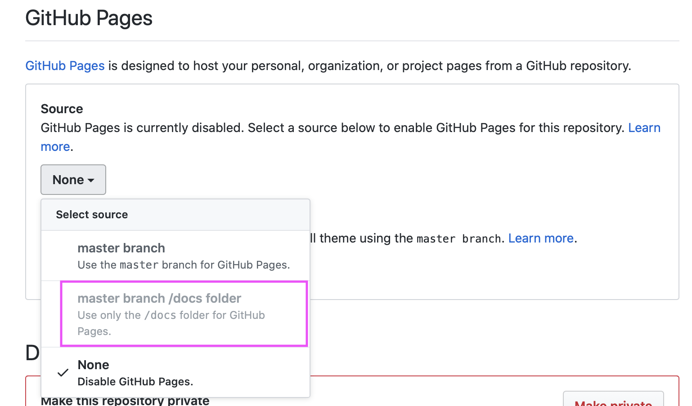

This vignette describes the process of deployment, how you get your hugodown website off your local computer and on to the internet for everyone to see. The easiest workflow for most people is to use netlify. I’ll describe this process in details, and then discuss other approaches that require a manual build site.
(Most of these techiques assume that you’re already familiar with the basics of Git and GitHub. If you’re not, you can try the Dropbox deployment described below, or try reading with Happy Git and GitHub for the R user by Jenny Bryan.)
Netlify
(Adapted from A Spoonful of Hugo: The netlify.toml File by Alison Hill, with permission.)
First, create an account if you don’t already have one:
-
Navigate to Netlify and click on the Sign Up link.

-
Sign up with GitHub to connect your GitHub and Netlify accounts.

If you use a different version control service, select GitLab or BitBucket instead.
Next create a netlify site for your GitHub repo:
-
On the netlify website, go New Site from Git and pick your repo. You’ll be prompted to fill in these fields. They are probably already filled in correctly for you:

Leave the advanced settings as is, and click deploy site. (This won’t work but we’ll fix it momentarily.)
Finally, configure your blog with netlify.toml. This prevents the biggest source of pain when deploying with netlify: version mismatches.
Check you have a
_hugodown.yamlfile that containshugo_version: 0.66.0or similar. It’s added automatically you created your site with a hugodown helper; you’ll need to add it yourself if you’ve created the site another way.Run
hugodown::use_netlify_toml(), check the newnetlify.tomlin, commit, and push to Github.
Now return to netlify, and look in the deploy log. You should see entries like:
10:00:42 PM: Build ready to start
10:00:43 PM: build-image version: 8e315e54bc4032a32e73290be556cde4f8348c12
...
10:00:56 PM: Found netlify.toml. Overriding site configuration
...
10:01:02 PM: Installing Hugo 0.68.3
10:01:02 PM: Hugo Static Site Generator v0.68.3-157669A0 linux/amd64 BuildDate: 2020-03-24T12:05:34Z
...
10:01:04 PM: Executing user command: hugo
10:01:04 PM: Building sites …
...
10:01:23 PM: Site is liveSuccess!
Manual builds
The advantage of netlify is that automatically runs hugo for you; in other deployment scenarios you’ll need to run hugodown::build_site() and publish the public/ directory that it creates. The following sections provide some advice for deployment scenarios that need this.
RStudio connect
For most sites, rmarkdown::publish_site() should just work.
If you deploy your site this way, and it doesn’t look quite right (e.g. missing style sheets) it’s likely because the theme you’re using requires a baseURL. In this case, you’ll need to update your config.toml with the URL for your site and republish.
GitHub pages
You’ll need to make a few changes to your site:
Run
file.create("static/.nojekyll"). This ensures that GitHub pages knows that you’re using a regular HTML website, not a jekyll website (jekyll is GitHub’s own blogging system).If you have a custom domain name, create a
static/CNAMEfile containing your domain name (e.g. justtidyverse.org, nothttps://tidyverse.org). Note that setting a custom domain name in the admin settings on your GitHub repo will not work.-
In
config.toml:Set
publishDir = "docs/"Set
baseURLto the url where you site will be published.
To deploy:
- Run
hugodown::build_site()and check in the rendereddocs/directory. (If nodocs/directory is created, double check your config above).
After the first deploy, you’ll need to go the admin page for your repo and select "master branch /docs folder) for source:

Site44 (dropbox)
If you don’t use Git and GitHub, one deployment option is Site44, a service that allows you to publish websites from within Dropbox folders. Site44 creates a Dropbox/Apps/site44 directory, and any folders within that directory are published as websites.
The recommended workflow for deploying hugodown websites to Site44 is to develop your website in a separate project directory, and then, when it’s ready for final publishing, run build_site() then copy the contents of the public directory to the folder for your website.
Amazon S3
If you are a user of Amazon Web Services you can serve your website directly from Amazon S3. This option is a bit more technically involved than GitHub Pages, Netlify, or Site 44. See the article on Hosting a Static Website on Amazon S3 for additional details.